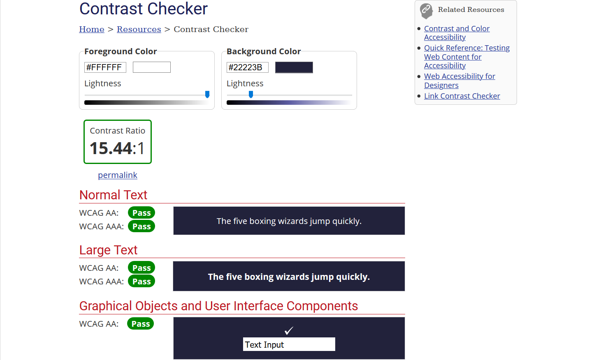

Tilgjengelighet
05.11.2020

Kontrastfarger
Jeg vil teste kontrastfargene på nettstedet. Som vi kan se, må jeg teste to hoveddeler av nettstedet; navigasjonsmenyen og hoveddelen. Kontrasten i hoveddelen er helt klart 100% fordi jeg har en hvit bakgrunn og svart tekst. Så la oss sjekke kontrasten på navigasjonsmenyen, resultatet:
Hvordan siden fungerer med en skjermleser
Jeg har installert nvaccess-programmet for å teste hvordan det fungerer på nettstedet mitt og fant ut at alt fungerer som det skal.
Hvordan siden fungerer ved bruk av kun tastatur
Siden fungerte ikke så bra med bare tastatur. Tab-knappen kunne bare fokuseres på navigasjonsmenyen, og deretter rett til toppknappen som ligger nederst på siden. Jeg har forbedret tastaturbruken ved å legge til muligheten til å fokusere (med mer synlig farge) på flere elementer på nettstedet som dere kan prøve ut.